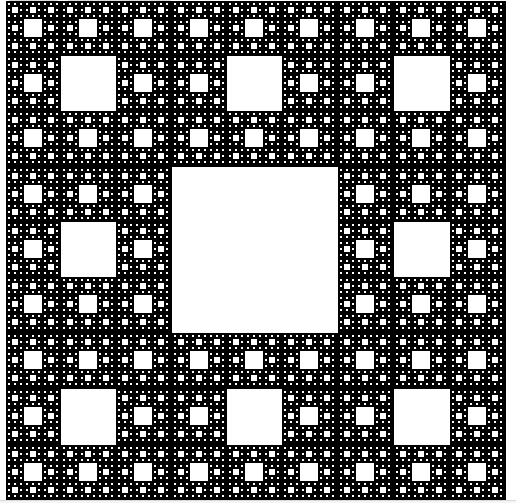

Le tapis de Sierpinski inventé en 1916, vient du nom de Wacław Sierpiński(un mathématicien polonais),son principe est d'obtenir une fractale à partir d'un carré. Le tapis se fabrique en découpant le carré en neuf carrés égaux, en supprimant la pièce centrale, et en appliquant cette procédure indéfiniment aux huit carrés restants.

Tout d'abord j'ai du me renseigner sur internet pour savoir à quoi ce tapis de Sierpinski, après avoir analyser sa structure, j'ai essayé de faire des modifications sur le TP noté qu'on avait fait en créeant plusieurs carrées
voici mon fichier sur python :
lien vers projet personnel: